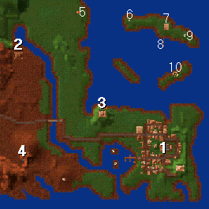

| 1. | Silver Cove [City Map] |
| 2. | Warlords Fortress [Map] |
| 3. | Silver Helm Stronghold [Map] |
| 4. | The Monolith [Map] |
| 5. | Shrine of Personality [Shrine List] pray here in March |
| 6. | Oblisk #10 |
| 7. | The Grove Inn |
| 8. | Ship Barracuda |
| 9. | A well that causes insanity, and increases Might Endurance, and speed, but decreases Intelligence and Endurance |
| 10. | Alter of the Sun [Quest] |
Leave us a message mgrounds@hotmail.com